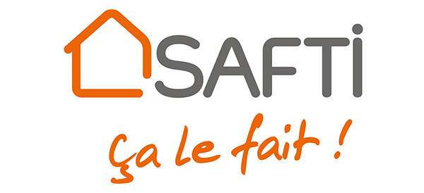

L'architecture hexagonale ... concrètement
AFUP Day 11/06/2021 - Toulouse
Architecture hexagonale
- Présentation du concept
- Mise en place
- Exemple d'implémentation
- Aller plus loin
- Intégration dans un legacy

Problème
- “Ah, si on pouvait utiliser XXX ! ça a l’air trop bien !”
- “Oui, mais vu tout ce qu’il faudrait réécrire ...”
XXX = nouvelle lib / service / framework
Solution universelle

Version architecture hexagonale
Architecture hexagonale
Avantages
- Choix infrastructure plus tard
- Démo plus rapidement
- Montées de versions framework et lib plus faciles
- Bascule facile vers nouvelles lib / services
- Tests plus simples à écrire
Attention
- un peu plus de code à écrire
- outils de génération de code ne fonctionnent pas tous
⇒ à réserver aux applications complexes… ou qui vont le devenir
Exemple
Lien vers repo à la fin
Avec Symfony… car + utilisé et s’y prête bien
C'est une des implémentations possibles
Arborescence cible
- src
- Domain
- Infrastructure
Mise en place : étape 1
Modification autoload dans composer.json
Etape 2 : déplacement du Kernel
src/Kernel.php ⇒ src/Infrastructure/Symfony/Kernel.php
- Corriger chemin vers config
- Corriger instanciations dans :
- bin/console
- public/index.php
- .env.test
Etape 3 : configuration services
services:
Domain\:
resource: '../src/Domain'
exclude:
- '../src/Domain/Entity/'
Infrastructure\:
resource: '../src/Infrastructure'
exclude:
- '../src/Infrastructure/Symfony/Kernel.php'
Infrastructure\Symfony\Controller\:
resource: '../src/Infrastructure/Symfony/Controller/'
tags: ['controller.service_arguments']
Domain
- Organisation métier
- Interface pour chaque besoin
- Tests 100% coverage
Infrastructure
- Organisation technique
- Implémenter interfaces
Exemple Domain
Exemple Interface du Domain
Exemple Infrastructure Tests
Exemple Infrastructure
Infrastructure controller
Infrastructure CLI
Outil
Deptrac : github.com/qossmic/deptrac
Règles :
- Domain n’utilise pas Infrastructure
- Domain n’utilise aucun namespace externe
(ex: Symfony, Doctrine, etc.)
Plusieurs contextes
- src
- [Contexte 1]
- Domain
- Infrastructure
- [Contexte 2]
- Domain
- Infrastructure
- ...
- Shared
- Infrastructure
Communication entre contextes
- par API
- par event (message bus)
Couches supplémentaires
- src
- [Contexte 1]
- Application
- Domain
- Infrastructure
- Symfony
- Doctrine
- ...
Dans un legacy ?
- Créer dossiers Domain et Infrastructure
- Nouvelles fonctionnalités dans hexagonal
- Migration progressive pour l'existant
Merci !
github.com/blanc-frederic/demo-hexa
Des questions ?